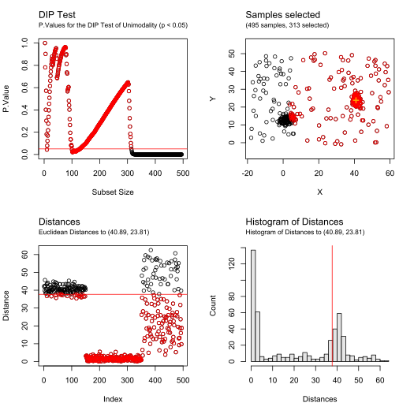

This notebook presents the application of the BRIL algorithm to artificial distributions, as complementary material of the article :
Brilhault A, Neuenschwander S, Rios RA, “A New Robust Multivariate Mode Estimator for Eye-tracking Calibration”, 2021, Behavior Research Methods (submitted)
To run this notebook interactively, follow the link below: 
Requirements
The following R packages are required for the execution of the notebook:
-
ggplot2 (install using the command
install.package("ggplot2")) -
mvtnorm (install using the command
install.package("mvtnorm")) -
BRIL (first install the package remotes if missing:
install.package("remotes"), then the BRIL package withremotes::install_github("adrienbrilhault/BRIL", subdir = "pkg"))
Once installed, load the libraries.
Generate an artificial distribution
Draw a compound distribution of bivariate normals and uniform noise based on the parameters below:
set.seed(123)
# number of uniform samples
sizeNoise <- 150
# size of each cluster
clusters <- list()
clusters$size <- c(300, 150, 200)
# variance of each cluster
clusters$variance <- runif(length(clusters$size), min = 1, max = 5)
# range of coordinates
plotArea <- matrix(c(0, 50, 0, 40), 2, 2)Generate the mixtures and plot:
# Draw random coordinates for each cluster, sufficiently far from each other to avoid overlap
clusters$positions <- matrix(rep(0, len = length(clusters$size) * 2), ncol = 2)
if (length(clusters$size) > 1) {
while (min(dist(clusters$positions)) < max(clusters$variance * 3 * 2)) {
clusters$positions <- matrix(c(sample(plotArea[1, 1]:plotArea[2, 1],
length(clusters$size),
replace = T
), sample(plotArea[1, 2]:plotArea[2, 2], length(clusters$size), replace = T)), ncol = 2)
}
}
# Draw multivariate normals
samples <- data.frame()
for (i in 1:length(clusters$size)) {
sigma <- matrix(c(1 / runif(1, min = 1, max = 4), 0, 0, 1), nc = 2) *
clusters$variance[i]
theta <- runif(1, min = 0, max = 2 * pi)
rot <- matrix(c(cos(theta), sin(theta), -sin(theta), cos(theta)), nrow = 2)
sigma <- rot %*% sigma %*% t(rot)
bivnorm <- mvtnorm::rmvnorm(clusters$size[i], clusters$position[i, ], sigma)
samplesTmp <- data.frame(X = bivnorm[, 1], Y = bivnorm[, 2], category = paste("Cluster", i))
samples <- rbind(samples, samplesTmp)
}
# Draw uniform noise
areaNoise <- matrix(c(
range(samples$X) + c(-1, +1) * diff(range(samples$X)) / 3,
range(samples$Y) + c(-1, +1) * diff(range(samples$Y)) / 3
), 2)
noiseSamples <- data.frame(
X = runif(sizeNoise, areaNoise[1, 1], areaNoise[2, 1]),
Y = runif(sizeNoise, areaNoise[1, 2], areaNoise[2, 2]), category = "Uniform Noise"
)
# Final distribution
samples <- rbind(samples, noiseSamples)
# Plot
theme_set(theme_bw(base_size = 16))
g <- ggplot(samples, aes(X, Y, color = category)) +
geom_point(size = 1) +
theme(legend.title = element_blank()) +
coord_fixed()
g <- g + geom_point(aes(
x = clusters$positions[1, 1],
y = clusters$positions[1, 2]
), colour = "black", shape = 3, size = 2)
print(g)
cat("Main cluster center coordinates: (", clusters$positions[1, 1],
",", clusters$positions[1, 2], ")")## Main cluster center coordinates: ( 13 , 36 )BRIL - Bootstrap
Compute a first estimate of central tendency through recursive trimming of low-depth samples.
firstEstimate <- median_rec(samples[, 1:2], method = "Spatial", alpha = 0.5)
plot(firstEstimate, asp = 1, nbIterations = 5, showMedian = TRUE)BRIL - Refine
Improve the precision of the estimate by two filtering processes, the first based on euclidean distances and a test of unimodality. The second on robust distances and a test of multivariate normality.
Filtering 1- Unimodal Filtering
filt_unimodal <- filter_outliers(samples[, 1:2],
center = firstEstimate$median,
test = "DIP", threshold = 0.05, debug = TRUE
)
plot(filt_unimodal, asp = 1)Filtering 2- Normal Filtering
# Correct the estimate within this subset for a more accurate ordering in the second step
correctedEstimate <- median_rec(samples[filt_unimodal$selected, 1:2],
method = "Spatial", alpha = 0.5
)
# Filter furthest outliers based on robust distances until reaching a normal-like subset
filt_normal <- filter_outliers(samples[filt_unimodal$selected, 1:2],
center = correctedEstimate$median, test = "Mardia", threshold = 0.05, debug = TRUE
)
plot(filt_normal, asp = 1)
firstEstimate$median## X Y
## 13.48031 35.22051
correctedEstimate$median## X Y
## 13.22288 35.94772
refinedEstimate <- colMeans(filt_normal$call$data[filt_normal$selected, ])
refinedEstimate## X Y
## 13.15157 35.90861BRIL - Iterate
Remove the final subset selected at the end of REFINE from the global distribution, and re-iterate the same procedure to identity other groups that might have a higher cardinality.
res <- bril(samples[, 1:2],
method = "Spatial", testUnimodal = "DIP", threshUnimodal = 0.05,
testNormal = "Mardia", threshNormal = 0.05, debug = TRUE
)
xlim <- c(min(samples[, 1]), max(samples[, 1]))
ylim <- c(min(samples[, 2]), max(samples[, 2]))Iteration 1 - Unimodal Filtering
plot(res$iterations[[1]]$filteringUnimodal, asp = 1, xlim = xlim, ylim = ylim)Iteration 1 - Normal Filtering
plot(res$iterations[[1]]$filteringNormal, asp = 1, xlim = xlim, ylim = ylim)Iteration 2 - Unimodal Filtering
if (res$nbClusters >= 2)
plot(res$iterations[[2]]$filteringUnimodal, asp = 1, xlim = xlim, ylim = ylim)
Iteration 2 - Normal Filtering
if (res$nbClusters >= 2)
plot(res$iterations[[2]]$filteringNormal, asp = 1, xlim = xlim, ylim = ylim)Iteration 3 - Unimodal Filtering
if (res$nbClusters >= 3)
plot(res$iterations[[3]]$filteringUnimodal, asp = 1, xlim = xlim, ylim = ylim)Iteration 3 - Normal Filtering
if (res$nbClusters >= 3)
plot(res$iterations[[3]]$filteringNormal, asp = 1, xlim = xlim, ylim = ylim)
… until starting an iteration with a distribution being unimodal before any outliers filtering, which will terminate the search.
Final result of the algorithm
res##
## => Results for bril() using method "Spatial" (alpha=0.5), DIP Unimodality Test (> 0.05), and Mardia Normality test (> 0.05)
## 800 samples: 3 clusters identified (sizes 305, 202, 154), and 139 samples unassigned
##
## Mode:
## X Y
## 13.15157 35.90861
##
##
## Clusters Sizes:
## [1] 305 202 154
##
##
## Clusters Centers:
## X Y
## [1,] 13.151573 35.90861
## [2,] 41.033893 23.93398
## [3,] 2.127943 13.10919
##
##
## Labels:
## [1] 1 1 1 1 1 1 1 1 1 1 1 1 1 1 1 1 1 1 1 1 1 1 1 1 1 1 1 1 1 1 1 1 1 1 1 1 1
## [38] 1 1 1 1 1 1 1 1 1 1 1 1 1 1 1 1 1 1 1 1 1 1 1 1 1 1 1 1 1 1 1 1 1 1 1 1 1
## [75] 1 1 1 1 1 1 1 1 1 1 1 1 1 1 1 1 1 1 1 1 1 1 1 1 1 1 1 1 1 1 1 1 1 1 1 1 1
## [112] 1 1 1 1 1 1 1 1 1 1 1 1 1 1 1 1 1 1 1 1 1 1 1 1 1 1 1 1 1 1 1 1 1 1 1 1 1
## [149] 1 1 1 1 1 1 1 1 1 1 1 1 1 1 1 1 1 1 1 1 1 1 1 1 1 1 1 1 1 1 1 1 1 1 1 1 1
## [186] 1 1 1 1 1 1 1 1 1 1 1 1 1 1 1 1 1 1 1 1 1 1 1 1 1 1 1 1 1 1 1 1 1 1 1 1 1
## [223] 1 1 1 1 1 1 1 1 1 1 1 1 1 1 1 1 1 1 1 1 1 1 1 1 1 1 1 1 1 1 1 1 1 1 1 1 1
## [260] 1 1 1 1 1 1 1 1 1 1 1 1 1 1 1 1 1 1 1 1 1 1 1 1 1 1 1 1 1 1 1 1 1 1 1 1 1
## [297] 1 1 1 1 3 3 3 3 3 3 3 3 3 3 3 3 3 3 3 3 3 3 3 3 3 3 3 3 3 3 3 3 3 3 3 3 3
## [334] 3 3 3 3 3 3 3 3 3 3 3 3 3 3 3 3 3 3 3 3 3 3 3 3 3 3 3 3 3 3 3 3 3 3 3 3 3
## [371] 3 3 3 3 3 3 3 3 3 3 3 3 3 3 3 3 3 3 3 3 3 3 3 3 3 3 3 3 3 3 3 3 3 3 3 3 3
## [408] 3 3 3 3 3 3 3 3 3 3 3 3 3 3 3 3 3 3 3 3 3 3 3 3 3 3 3 3 3 3 3 3 3 3 3 3 3
## [445] 3 3 3 3 3 3 2 2 2 2 2 2 2 2 2 2 2 2 2 2 2 2 2 2 2 2 2 2 2 2 2 2 2 2 2 2 2
## [482] 2 2 2 2 2 2 2 2 2 2 2 2 2 2 2 2 2 2 2 0 2 2 2 2 2 2 2 2 2 2 2 2 2 2 2 2 2
## [519] 2 2 2 2 2 2 2 2 2 2 2 2 2 2 2 2 2 2 2 2 2 2 2 2 2 2 2 2 2 2 2 2 2 2 2 2 2
## [556] 2 2 2 2 2 2 2 2 2 2 2 2 2 2 2 2 2 2 2 2 2 2 2 2 2 2 2 2 2 2 2 2 2 2 2 2 2
## [593] 2 2 2 2 2 2 2 2 2 2 2 2 2 2 2 2 2 2 2 2 2 2 2 2 2 2 2 2 2 2 2 2 2 2 2 2 2
## [630] 2 2 2 2 2 2 2 2 2 2 2 2 2 2 2 2 2 2 2 2 2 0 0 0 0 2 0 0 0 0 0 0 0 0 0 0 0
## [667] 0 0 0 0 0 0 0 0 0 2 0 0 0 0 0 0 0 0 0 0 3 0 0 0 0 3 0 0 0 0 0 0 0 0 0 0 0
## [704] 0 0 0 1 0 0 0 0 0 0 0 0 0 0 0 0 0 0 0 0 0 0 0 0 0 0 0 0 0 0 0 0 0 0 0 0 1
## [741] 0 0 0 3 0 0 0 0 0 0 0 0 0 0 0 0 0 3 0 0 0 0 0 0 0 0 0 0 0 0 0 0 0 0 0 2 0
## [778] 0 0 0 0 0 0 0 0 1 0 0 0 1 0 0 0 0 0 1 0 0 0 0
# plot the final result with the main mode
samples$labels <- factor(res$labels)
labelsCluster <- c()
for (i in sort.int(unique(res$labels))) {
labelsCluster[[as.character(i)]] <- sprintf("%d (%d pts)", i, length(which(res$labels == i)))
}
labelsCluster[[as.character(res$mainCluster)]] <- paste(labelsCluster[[as.character(res$mainCluster)]], " *")
ggplot(samples, aes(X, Y, color = labels, group = labels, shape = category)) +
geom_point(size = 2) +
geom_point(aes(x = res$mode[1], y = res$mode[2]),
colour = "black", shape = 4, size = 3, stroke = 2
) +
scale_color_discrete(labels = labelsCluster, name = "clusters") +
coord_fixed(ratio = 1, expand = TRUE)